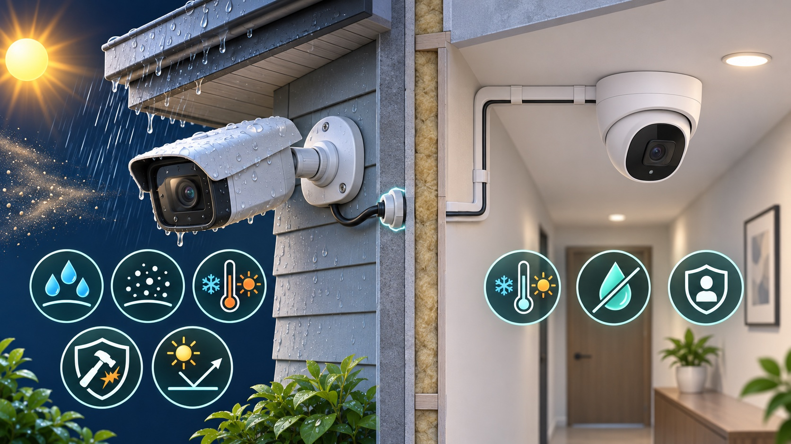
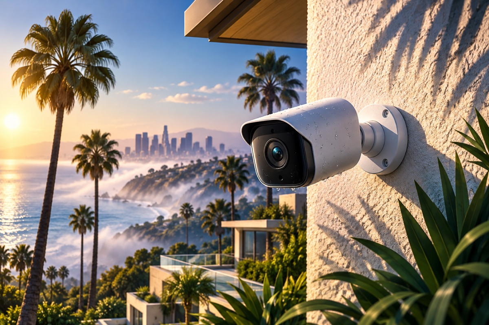
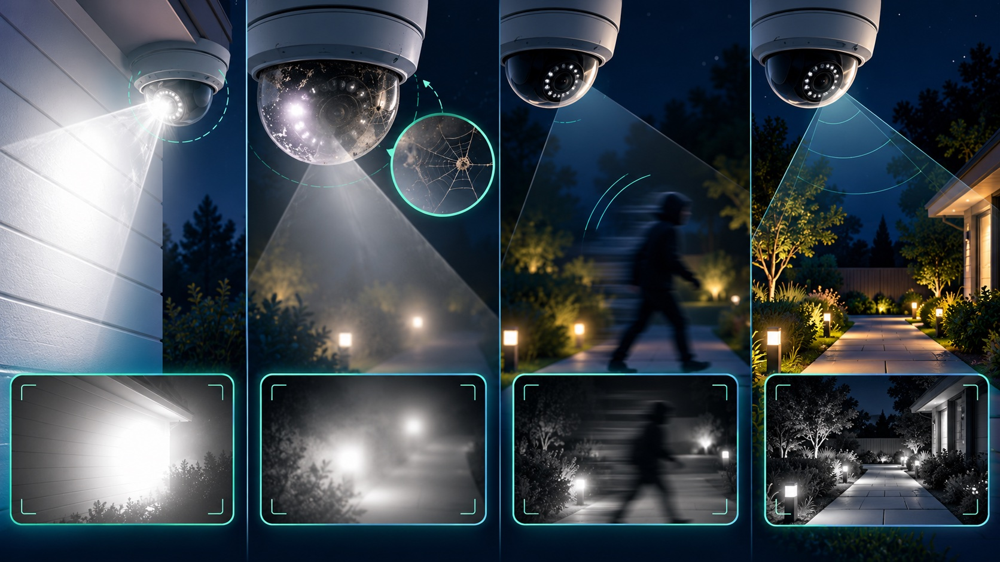
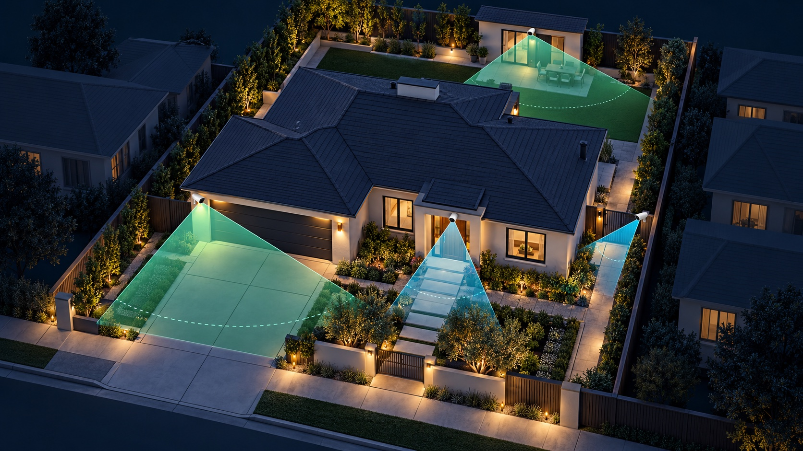

Use an outdoor-approved camera anywhere the device or its cable connection can face rain, dust, humidity, direct sun or wide temperature swings. Use an indoor camera only in a dry, controlled space within the manufacturer's operating conditions. A roof overhang does not automatically turn an exterior location into an indoor environment.
Indoor and outdoor models can both be domes, turrets, bullets or compact cameras. The housing style alone does not establish where a product can operate. Check the manufacturer's datasheet and installation guide for an explicit outdoor-use statement, operating temperature, ingress rating, impact rating and any required mount or weather shield.
Axis notes that outdoor installations add heat, cold, humidity and ultraviolet exposure. It also cautions that an IP66 classification by itself does not prove that a camera is approved for outdoor use. Start with the product's intended environment, then use ratings to compare protection.
An IP code describes an enclosure's tested resistance to solids and water. In a rating such as IP66, the first digit refers to protection from solid objects such as dust, and the second digit refers to water ingress. The tests differ: a water-jet rating and an immersion rating describe different exposure conditions, so a larger second digit is not automatically “better” for every outdoor installation.
Ingress protection also depends on correct assembly. A loose cable gland, wrong conduit fitting, damaged gasket or open junction box can defeat the intended weather seal. Confirm that the complete installed assembly—including cable entries and accessories—matches the manufacturer's instructions.
Do not infer outdoor suitability from appearance or an online marketplace description. Verify it in the current manufacturer documentation for the exact model and required accessories.
Compare the listed operating range with the actual mounting location, not a general city temperature. A sunlit wall, enclosed soffit or metal pole can expose equipment to conditions that differ from nearby air temperature. Axis recommends considering the sun's path because direct sunlight can also damage image usability through glare and difficult exposure.
An IK rating describes tested resistance to mechanical impact. It is separate from the IP rating and does not make a camera indestructible. Consider impact resistance where a camera is within reach, in a low parking structure or exposed to incidental contact. Mounting height, fasteners, conduit and a tamper-resistant form factor are part of the plan.
Near salt air, pools, industrial exhaust or frequent irrigation, check whether the camera, mount and fasteners have suitable corrosion protection. Axis explains that NEMA enclosure ratings consider factors beyond ingress, including corrosion and construction. Do not assume a general IP rating covers every corrosive environment.
Even when water cannot enter the enclosure, droplets, dust, spider webs and residue on the viewing surface can degrade the picture and reflect infrared light. Place the camera where the lens or dome is reasonably protected and accessible for safe inspection and cleaning.
Choose the exact indoor job: cover an entrance hall, business lobby, stock area, service counter or other agreed security zone. Aim only at the necessary area and decide who can view live and recorded video. Avoid private spaces and review applicable policies, leases and laws before enabling audio or placing cameras in shared areas. Our California camera-law overview is a starting point, not legal advice.
An indoor scene can still be difficult when a camera faces a bright exterior door or window. Check the view throughout the day and test a person moving through the darker foreground. The right exposure, angle and lighting matter more than simply adding resolution.
Plan the power source, network path and recording destination before mounting the camera. Confirm that the owner controls the administrator account and can retrieve recorded footage. Our wired-versus-wireless guide separates power, connectivity and recording decisions.
“Garage” is not a technical environmental rating. An attached, dry and temperature-stable garage may fit some indoor product specifications; a detached, dusty, humid or unconditioned garage may not. Check the actual temperature range, moisture, dust, pests, washdown risk and cable entry. When conditions are uncertain or variable, an outdoor-approved model is the clearer choice.
Coverage from direct rainfall does not remove exposure to wind-driven moisture, humidity, condensation, dust, insects, UV and temperature changes. Use an outdoor-approved model unless the manufacturer explicitly approves the exact protected location and installation method.
Glass can reflect the camera's own infrared illumination and interior light back into the lens, producing glare, haze or a mirror image. Axis advises keeping the infrared beam clear of nearby windows and other reflective surfaces. Turning off built-in IR and controlling interior light may reduce reflections, but the result still needs an after-dark recording test. A properly mounted exterior camera usually gives a more dependable exterior view.
If the symptom is a foggy or washed-out night image, use our night-vision troubleshooting guide.
A weather-rated camera on an unsuitable mount or poorly sealed cable path is not a complete outdoor installation.
First decide what the view must document and at what distance. Then choose a location and lens that provide the needed detail. Finally, select a camera whose environmental specifications match that location. This order prevents the enclosure rating from distracting from the actual evidence goal.
Use our camera-count planning worksheet to map coverage jobs and our home placement guide to plan entrances, approaches and detail views.
Tech Secure 360 can match each Greater Los Angeles camera location to the evidence goal, environment, mounting method and recorded-video test it requires.

Plan for sun, heat, residue and coastal exposure at the actual mounting point.

Diagnose IR glare, dirty domes, motion blur, backlight and weak lighting.

Plan useful views for entrances, approaches, lighting and recorded detail.
Tell us about your place and we'll respond within one business day with a tailored plan and pricing. Or call us right now.
Your request is in. A Tech Secure 360 specialist will reach out within one business day. Need help now? Call (747) 336-2737.